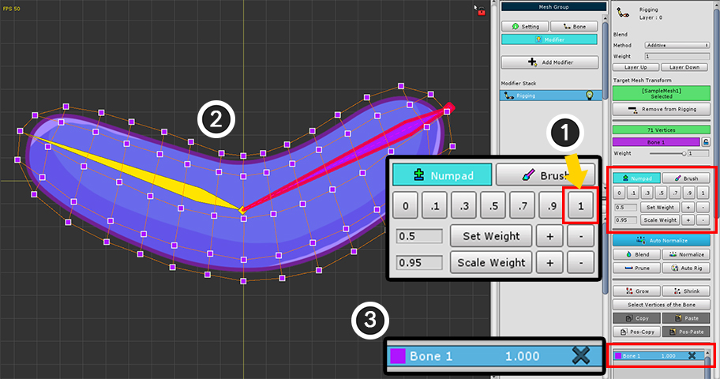
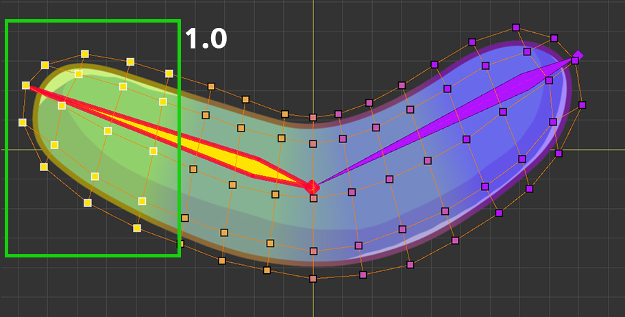
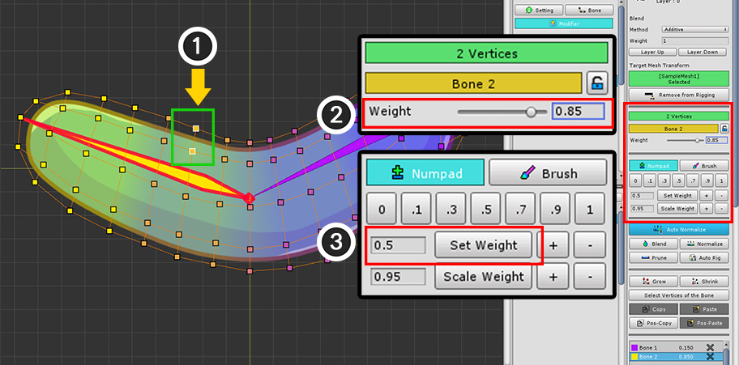
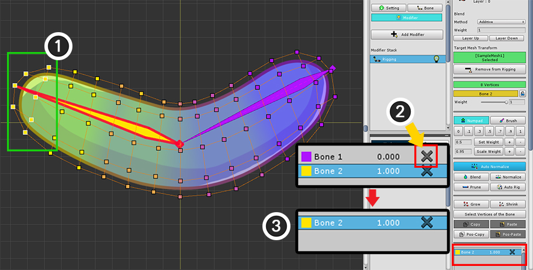
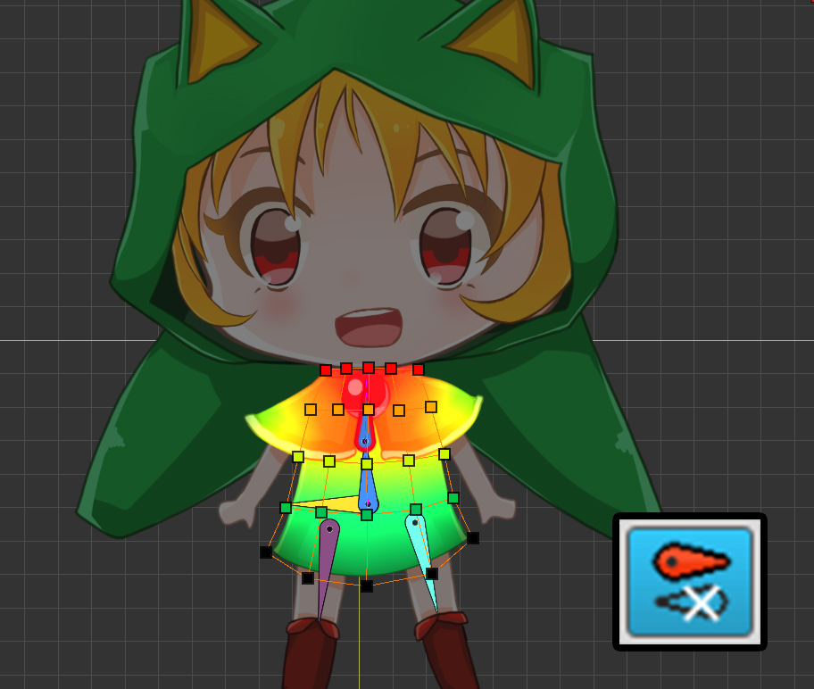
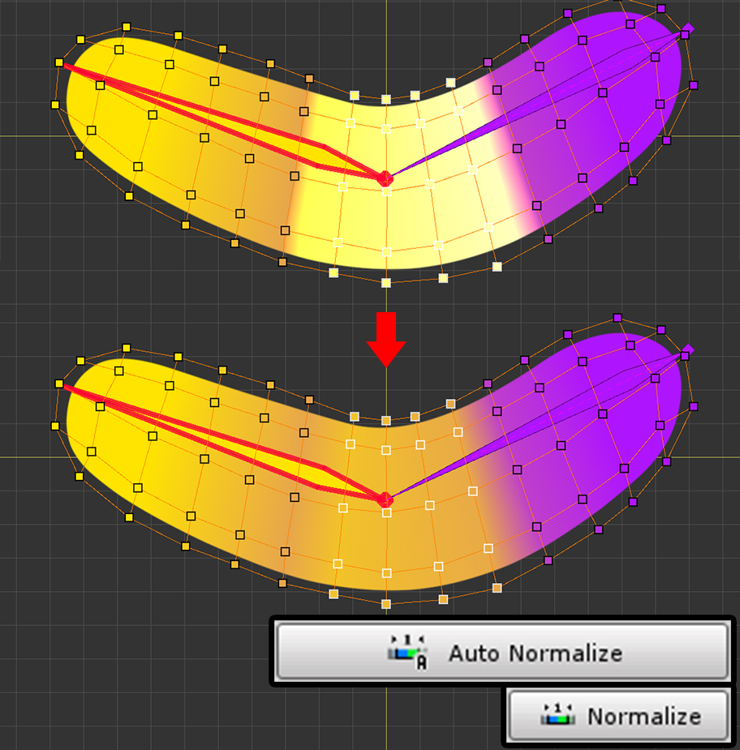

AnyPortrait > 메뉴얼 > 리깅 모디파이어
리깅 모디파이어
1.2.3
리깅(Rigging)은 메시에 본들을 추가하고, 메시와 본을 연결하여 움직일 수 있게 만드는 과정을 말합니다.
특히, 메시의 버텍스들과 본을 연결하기 위해 가중치(Weight)를 설정하는 것이 리깅의 핵심입니다.
AnyPortrait의 "리깅 모디파이어(Rigging Modifier)"는 이러한 리깅 작업을 위한 다양한 기능을 제공합니다.
이 페이지에서 리깅 모디파이어의 기본적인 사용 방법과 기능들을 소개합니다.
이 페이지의 내용은 Getting Started 2에서도 다루고 있습니다.
다양한 경우에서의 리깅을 하는 방법과 고급 기능에 대해서는 다음 페이지를 참고해주세요.
리깅 모디파이어 추가하고 버텍스와 본을 연결하기

메시 그룹을 선택하고 Modifier 탭을 선택합니다.
Add Modifier 버튼을 누르고 리깅(Rigging) 모디파이어를 선택하여 추가합니다.

(1) 메시를 선택합니다.
(2) Add to Rigging 버튼을 눌러서 모디파이어에 메시를 등록합니다.

메시를 모디파이어에 등록할 때 자동으로 리깅 편집이 시작됩니다.
만약 편집 모드(Binding)가 시작되지 않았다면 (1) Start Binding 버튼을 눌러서 편집을 시작하세요. (단축키 : A )

메시가 선택된 상태에서 버텍스와 가중치를 설정할 본을 선택해야 합니다.
일단 여기서는 모든 버텍스에 대해서 가중치를 부여해봅시다.
(1) 마우스를 드래그 하거나 Ctrl+A 를 눌러서 모든 버텍스들을 선택합니다.
(2) 대상이 되는 본을 클릭합니다.
참고.
선택을 해제할 때는 마우스 우클릭 를 하면 됩니다.
첫번째 우클릭에서는 버텍스들의 선택이 해제되며, 두번째 우클릭에서는 본 선택이 해제됩니다.

이제 선택된 버텍스들과 본을 연결해봅시다.
(1) 가중치 툴에서 "1"을 누릅니다.
(2) 작업 공간에서 메시의 색상의 본의 색상 또는 붉은색으로 바뀌는 것을 볼 수 있습니다. (옵션에 따라 색상이 다릅니다.)
(3) 본 리깅 정보에 선택된 본(Bone 1)과 지정된 가중치(1.0)가 추가된 것을 볼 수 있습니다.

두번째 본과 버텍스들을 연결해봅시다.
이번엔 일부의 버텍스들만 선택해서 가중치를 설정해보겠습니다.
(1) 마우스를 드래그 하여 버텍스들을 선택합니다. Ctrl 나 Shift 를 눌러서 추가적으로 버텍스들을 선택할 수 있습니다.
(2) 두번째 본을 클릭하여 선택합니다.

관절 부위에서는 본들 간의 가중치가 서서히 변하게 만드는 것이 좋습니다.
현재 선택된 버텍스들에는 약간의 가중치만 지정해줍시다.
(1) 가중치 툴에서 ".3" 버튼을 누릅니다.
(2) 또는 "+" 버튼을 몇번 눌러서 가중치를 증가시킬 수도 있습니다.
(3) Bone 2에 대한 리깅 정보가 추가된 것을 볼 수 있습니다.
(4) 메시의 색상도 두번째 본의 색상으로 조금 변합니다.
참고
단축키를 이용하여 가중치를 변경할 수 있습니다.
X 또는 Z 를 누르면 0.02만큼 가중치가 증감합니다. Shift 를 누르고 X 또는 Z 를 누르면 0.05만큼 가중치가 증감합니다.

같은 방식으로 버텍스를 선택하고 두번째 본에 대해 가중치를 설정합니다.
이전보다 두번째 본에 더 가까운 버텍스들을 선택하고, 이번엔 0.5의 가중치를 할당합니다.


계속해서 버텍스들을 선택하고 두번째 본에 더 많은 가중치를 할당합니다.
이렇게 가중치가 서서히 두번째 본에 더 크게 할당되면 관절의 움직임에 따라 메시가 자연스럽게 변형될 것입니다.
가중치 값을 직접 설정하기
리깅 모디파이어는 가중치를 설정하는 여러가지 편의 기능들을 제공합니다.
그중 가장 기본적인 기능은 "가중치 값을 직접 설정하기"일 것입니다.
다음의 방법으로 간단하게 가중치 값을 설정할 수 있습니다.

(1) 수정하고자 하는 버텍스들을 선택합니다. (대상이 되는 본이 선택된 상태여야 합니다.)
이때 가중치 값을 직접 설정하는 방법은 두가지가 있습니다.
만약 선택된 버텍스가 1개이거나 해당 본에 대해서 가중치가 모두 같다면 (2) 슬라이더를 이용해서 값을 수정할 수 있습니다.
또는 (3) 가중치 툴에서 설정할 가중치 값을 입력한 후 Set Weight 버튼을 눌러서 가중치를 할당할 수 있습니다.
리깅 정보 삭제하기
가중치 값이 0 또는 매우 작은 값이거나 잘못 적용되었다면 해당 본의 리깅 정보를 삭제할 필요가 있습니다.
굳이 이 작업이 없어도 AnyPortrait는 Bake를 할 때 무효한 리깅 정보를 삭제하므로 성능에는 문제가 없습니다.
그렇지만 많은 본에 대하여 복잡한 리깅 작업을 할 경우, 불필요한 리깅 정보는 미리 삭제하는 것이 좋습니다.

(1) 버텍스를 선택합니다.
(2) 삭제하고자 하는 리깅 정보의 "X" 버튼을 누릅니다.
(3) 리깅 정보가 삭제된 것을 볼 수 있습니다.
리깅 정보 출력 방식

화면 하단에서 리깅 정보가 작업 공간에서 어떻게 보여질지를 변경할 수 있습니다.
(1) 메시의 이미지가 가중치 색상과 함께 출력될지 여부를 결정합니다.
(2) 본의 색상이 출력될지, 또는 선택된 본의 가중치 그라데이션이 출력될지 여부를 결정합니다.
(3) 버텍스의 외형과 색상을 결정합니다. 가중치 결과값이 색상으로 출력되거나 원형 차트 방식으로 출력될 수 있습니다.

메시의 이미지를 안보이게 만든 상태입니다.
이 방식에서는 가중치의 정확한 값을 시각적으로 확인할 수 있는 장점이 있습니다.

가중치 색상을 "본의 색상"에서 "선택된 본의 가중치 그라데이션"으로 변경했습니다.
가중치가 커질 수록 푸른색에서 붉은색으로 변합니다.

버텍스 출력 방식을 "원형 차트" 방식으로 변경하였습니다.
이 방식에서는 버텍스가 원형으로 출력되며, 버텍스 내에서의 가중치들의 비율을 정확히 볼 수 있습니다.
선택된 본에 대한 영역은 조금 더 크게 출력됩니다.
리깅되지 않은 본 출력 방식
전체의 본들 중에서 편집 중인 메시에 리깅 가중치가 할당되는 본은 일부일 것입니다.
특히, 본이 매우 많은 경우엔 가중치가 할당되지 않은 본들은 리깅 작업을 하는 동안 굳이 보여질 필요가 없습니다.

화면의 하단에 본의 출력 방식을 보여주는 버튼이 추가되어 있습니다.
이 버튼을 눌러서 "현재의 메시와 리깅되지 않은 본"을 어떻게 보여줄지를 3단계로 설정할 수 있습니다.

리깅 여부에 상관없이 모든 본들을 보여주는 모드입니다.

리깅되지 않은 본들을 반투명한 회색으로 보여줍니다.

리깅되지 않은 본들은 렌더링되지 않습니다.
본의 외형과 리깅에 관련된 설정
본의 외형이나 크기를 바꾸거나 리깅 가중치와 관련된 색상, 버텍스의 크기를 바꿀 수 있습니다.
설정 다이얼로그에서 다양한 옵션들을 이용하여 자신에게 맞는 작업 환경을 만드세요!
포즈 테스트
리깅이 잘 적용되었는지는 직접 테스트를 하기 전까지 알기가 어렵습니다.
캐릭터가 다양한 포즈를 취하도록 만들고, 리깅 가중치를 수정하는 과정을 반복해야 합니다.
AnyPortrait에서는 이 과정을 편리하게 수행할 수 있도록 리깅 모디파이어 편집 중에 포즈를 테스트할 수 있는 기능을 제공합니다.

(1) Pose Test 버튼을 누르면 리깅 편집 모드가 켜진 상태에서 본을 움직일 수 있습니다.
다시 버튼을 누르면 원래 상태로 돌아갑니다.
(2) Reset Pose 버튼을 누르면 테스트 상태를 유지하면서 원래의 자세로 복구됩니다.
포즈를 테스트하는 도중에도 리깅을 할 수 있습니다.
참고. 만약 포즈 테스트 직후에 본이 움직이지 않는다면, 다른 본을 선택한 후 다시 선택하면 움직일 수 있습니다.
리깅 툴 UI

1. 메시 등록/해제
: 선택한 메시를 리깅 모디파이어에 등록하거나 해제합니다.
2. 선택한 버텍스와 본의 정보
: 리깅의 대상이 되는 버텍스와 본 정보가 출력되며, 가중치 값을 수정할 수도 있습니다.
- A. 선택한 버텍스의 인덱스나 개수
- B. 선택한 본의 이름과 잠금 버튼
: 본의 리깅값을 고정하는 잠금 기능을 지원합니다. 잠금 기능에 대해서는 관련 페이지를 참고하세요.
3. 가중치 툴
: 가중치 값을 직접 할당하는 기능들입니다.
- C. Numpad 탭과 Brush 탭
: 숫자 패드 스타일로 값을 할당하는 모드와 브러시를 이용하여 편집할 수 있는 모드를 전환합니다.
브러시 모드에 대해서는 관련 페이지를 참고하세요.
- D. 가중치 직접 지정 : 버튼의 값이 가중치로 지정됩니다.
- E. Set Weight : 왼쪽 박스의 숫자 값을 가중치로 설정합니다. +, - 버튼을 누르면 0.05 단위로 가중치를 증감합니다.
- F. Scale Weight : 왼쪽 박스의 숫자만큼 가중치를 곱합니다. +, - 버튼을 누르면 1.05 또는 0.95 만큼 가중치를 곱합니다.
4. 가중치 보조 툴
: 가중치를 설정할 때 도움을 주는 기능들입니다.
5. 버텍스 선택 및 가중치 복사/붙여넣기
: 버텍스를 선택하는 보조 기능들과 가중치 값을 복사하는 기능들입니다.
6. 본 리깅 정보
: 선택한 버텍스와 연결된 본들과 가중치가 리스트 형태로 출력됩니다.
리깅 보조 기능들

Blend
선택한 버텍스의 주변의 리깅 정보를 바탕으로 가중치가 부드럽게 분포되도록 만듭니다.
선택한 본을 중심으로 값이 분포되며, 만약 선택한 본에 대한 리깅 정보가 없다면 자동으로 추가됩니다.
어떤 본을 선택했느냐에 따라 블렌딩 결과가 다르므로 관절의 모든 본에 대해서 블렌딩을 수행하는 것을 권장합니다.
버튼을 누른 때마다 조금씩 블렌딩이 처리됩니다.

Normalize / Auto Normalize
가중치의 합이 1이 되도록 만듭니다.
Auto Normalize가 켜진 상태에서는 항상 자동으로 가중치의 합이 1로 보정됩니다.

Prune
가중치 값이 0이거나 매우 작은 리깅 정보들을 모두 삭제합니다.
불필요한 리깅 정보를 삭제할 때 유용합니다.

Auto Rig
선택한 버텍스에 대해서 자동으로 리깅을 수행합니다.
v1.1.8부터 이 기능이 대폭 개선되었습니다.
자세한 내용은 관련 페이지를 참고하세요.

Grow
선택된 버텍스로부터 1단계 더 확장하여 더 많은 버텍스들을 선택합니다.

Shrink
선택된 버텍스로부터 1단계 축소하여 더 적은 버텍스들을 선택합니다.

Select Vertices of the Bone
선택한 본에 가중치가 할당된 모든 버텍스들을 선택합니다.
Ctrl (Mac에서는 Command )를 누른 상태에서 버튼을 클릭하면 기존에 선택한 버텍스들을 포함하여 선택합니다.